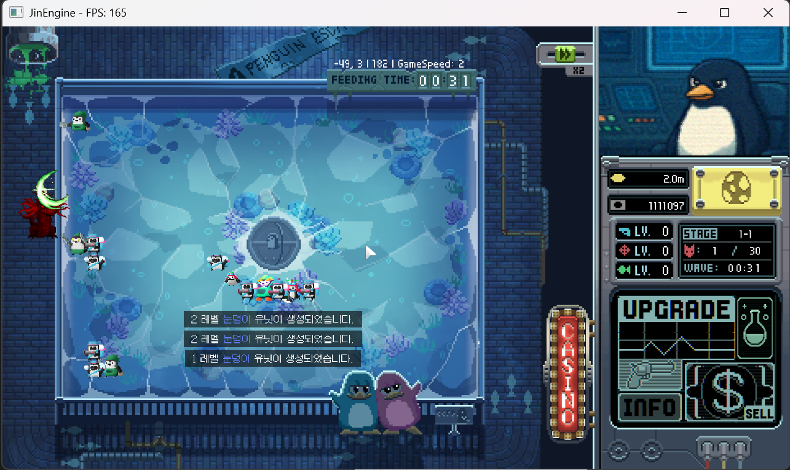

Project GGD (JinEngine / C++ 자체엔진)
- 프로젝트 소개: C++ 자체엔진 기반, 게임플레이 기능 구현과 디버깅을 담당
- 기술 초점: 기존 C++ 자체엔진 코드베이스 위에서 게임플레이 및 UI 시스템 확장
-
주요 기여
- 1개/전체 판매 모드가 포함된 유닛 판매 흐름 및 CommandCard 동작 구현
- ESC 입력 기반 일시정지 및 설정 팝업 UI 구현
- 라운드 이자 보상, 조기 웨이브 스킵 흐름, 아이템 카드 리롤 로직 구현
- 유닛 합성 흐름 구현: 같은 종류 유닛 슬롯 등록, 확률 계산, 결과 유닛 생성 및 실패 보상 처리
- 마우스 호버 툴팁, 정보창/뒤로가기 수정, 아이템 UI 개선, 바이너리 저장 데이터, 최고 점수 NEW 표시 구현
- 기술 스택: C++, JinEngine, 자체엔진
문제 해결 / 배운 점
문제 해결
- 유닛 합성 상태 관리: 기존 유닛 선택/슬롯 시스템 위에 합성 기능을 추가하며 임시 UI 슬롯과 실제 필드 유닛 상태가 어긋날 수 있는 문제 확인. 같은 종류 유닛 검증, 슬롯 등록/해제, 결과 유닛 생성, 필드 복귀 흐름을 분리해서 상태 불일치를 줄이도록 구현함
- 보상 및 UI 흐름: 아이템 리롤과 조기 웨이브 스킵을 추가하며 기존 아이템, 웨이브, 입력 흐름을 먼저 확인. 중복 방지, 리롤 횟수 제한, 웨이브 클리어 판정을 연결해서 기존 플레이 루프를 해치지 않도록 구현함
배운 점
- 이미 개발 중인 프로젝트에 중간 합류하며 실제 현업에서도 자주 마주칠 수 있는 상황을 경험함. 기존 엔진 구조를 먼저 파악하고, 의도나 책임 범위가 불명확한 부분은 기존 개발자에게 질문하며 정해진 흐름 안에서 기능을 구현하는 과정 학습
- 기능 파일만 보는 것이 아니라 코드 수정 전 초기화, Update, Render, Input, 오브젝트 생명주기, UI 상태 전환, 저장 데이터 흐름을 따라가며 엔진 및 프로젝트 구조를 파악하는 방법을 학습함